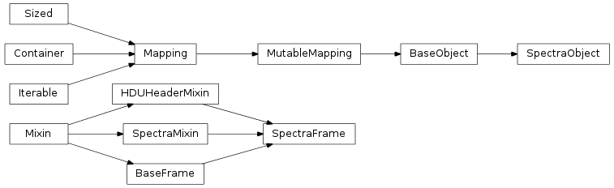

An object and frame class which can handle raw spectrum data. This module only handles raw spectra. These spectra are simply data held in image-like frames. This class allows a spectrum to be consistently read and written to a FITS file, using image rows as data arrays. The spectra functions contained in this module are bland. For more sophisitcated spectral analysis, see the AnalyticSpectra module, which contians classes which can re-sample a raw spectrum and interpolate correctly across a spectrum to provide an analytic interface to otherwise discrete spectra.
Warning
The class implemented here does not yet use a sophisticated enough method for saving FITS header data etc. As such, it will not preserve state names etc. The development of this class should bring it inline with the STSCI spectra classes in the future.

This object tracks a number of data frames. This class is a simple subclass of AstroObjectBase.BaseObject and usese all of the special methods implemented in that base class. This object sets up an image object class which has two special features. First, it uses only the SpectraFrame class for data. As well, it accepts an array in the initializer that will be saved immediately.
Loads spectral data from a data file which contains two columns, one for wavelenght, and one for flux.
Clears all states from this object. Returns an empty list representing the currently known states.
| Parameters: | delete (bool) – whether to explicitly delete states or just stop referencing dictionary. |
|---|---|
| Returns: | list of states remaining |
The data for the selected FITS frame.
Returns the raw data for the current state. This is done through the FITSFrame.__call__() method, which should return basic data in as raw a form as possible. The purpose of this call is to allow the user get at the most recent piece of data as easily as possible.
| Parameters: |
|
|---|---|
| Returns: | np.array of called data |
Warning
I have not finished examining some issues with referencing vs. copying data that comes out of this call. Be aware that manipulating some objects produced here may actually manipulate the version saved in the Object. The current implementation which protects this call relies on the numpy copy command, np.copy(state()), which might fail when used with data objects that do not return numpy arrays.
The selected FITS frame. This frame is usually the last modified frame in the system.
Returns the FITSFrame Specfied. This method give you the raw frame object to play with, and can be useful for transferring frames around, or if your API is built to work with frames rather than raw data.
| Parameters: | statename (string) – the name of the state to be retrieved. |
|---|---|
| Returns: | dataClass instance for this object |
Warning
Unlike with the BaseObject.data() call, the object returned here should be treated as roughly immutable. That is, it is not advisable to re-use the data frame here, as Python has returned a reference to all examples of this data frame in your code:
>>> obj = BaseObject()
>>> obj.save(FITSFrame(None,"Label"))
>>> Frame = obj.frame()
>>> Frame.label = "Other"
>>> obj.frame().label
"Other"
Note
Using frames can be advantageous as you don’t rely on the Object to guess what type of frame should be used. Most times, the object will guess correctly, but Frames are a more robust way of ensuring type consistency
Read an atfile into this object. The name of the atfile can include a starting “@” which is stripped. The file is then loaded, and each line is assumed to contain a single fully-qualified part-name.
Retrun a new object created from a filename. This method is a shortcut factory for read().
>>> obj = BaseObject.fromFile("SomeImage.fits")
>>> obj.list()
["SomeImage","SomeImage Frame 1","SomeImage Frame 2"]
Removes all states except the specified frame(s) in the object.
| Parameters: |
|
|---|---|
| Returns: | list of states remaining. |
Provides a list of the available frames, by label.
| Returns: | list |
|---|
This reader takes a FITS file, and trys to render each HDU within that FITS file as a frame in this Object. As such, it might read multiple frames. This method will return a list of Frames that it read. It uses the dataClasses FITSFrame.__read__() method to return a valid Frame object for each HDU.
>>> obj = BaseObject()
>>> obj.read("SomeImage.fits")
>>> obj.list()
["SomeImage","SomeImage Frame 1","SomeImage Frame 2"]
Removes the specified frame(s) from the object.
| Parameters: |
|
|---|---|
| Returns: | list of states remaining. |
Saves the given data to this object. If the data is an instance of one of the acceptable dataClasses then this method will simply save the data. Otherwise, it will attempt to cast the data into one of the acceptable dataClasses using their __save__() mehtod.
| Parameters: |
|
|---|---|
| Raises : | TypeError when the data cannot be cast as any dataClass |
| Raises : | KeyError when the data would overwrite an existing frame. |
Sets the default frame to the given statename. Normally, the default frame is the one that was last saved.
| Parameters: | statename (string) – the name of the state to be selected. |
|---|
Returns the (rendered) matplotlib plot for this object. This is a quick way to view your current data state without doing any serious plotting work. This aims for the sensible defaults philosophy, if you don’t like what you get, write a new method that uses the data() call and plots that.
| Parameters: | statename (string) – the name of the state to be retrieved. |
|---|
Writes a FITS file for this object. Generally, the FITS file will include all frames curretnly available in the system. If you specify states then only those states will be used. primaryState should be the state of the front HDU. When not specified, the latest state will be used. It uses the dataClasses FITSFrame.__hdu__() method to return a valid HDU object for each Frame.
| Parameters: |
|
|---|
A single frame of a spectrum. This will save the spectrum as an image, with the first row having flux, and second row having the wavelength equivalent. Further rows can accomodate further spectral frames when stored to a FITS image. However, the frame only accepts a single spectrum.
Returns the data for this frame, which should be a numpy.ndarray. The first row will be the spectral data, the second row the equivalent wavelength for this spectrum.
Retruns an HDU which represents this frame. HDUs are either pyfits.PrimaryHDU or pyfits.ImageHDU depending on the primary keyword.
Attempts to create a ImageFrame object from the provided data. This requres some type checking to ensure that the provided data meets the general sense of such an image. If the data does not appear to be correct, this method will raise an NotImplementedError with a message describing why the data did not validate. Generally, this error will be intercepted by the caller, and simply provides an indication that this is not the right class for a particular piece of data.
If the data is saved successfully, this method will return an object of type ImageFrame
The validation requires that the data be a type numpy.ndarray and that the data have 2 and only 2 dimensions. As well, the data should pass the validate() method.
Attempts to convert a given HDU into an object of type ImageFrame. This method is similar to the __save__() method, but instead of taking data as input, it takes a full HDU. The use of a full HDU allows this method to check for the correct type of HDU, and to gather header information from the HDU. When reading data from a FITS file, this is the prefered method to initialize a new frame.
alias of ABCMeta
x.__delattr__(‘name’) <==> del x.name
default object formatter
x.__getattribute__(‘name’) <==> x.name
Extract header values from a given HDU and save them to this object.
| Parameters: | HDU (pf.HDU) – Header-Data-Unit from which to get the header information. |
|---|---|
| Returns: | None |
x.__hash__() <==> hash(x)
alias of ABCMeta
helper for pickle
helper for pickle
Returns String Representation of this frame object. Will display the class name and the label. This method does not need to be overwritten by subclasses.
| Returns: | literal sting representation |
|---|
x.__setattr__(‘name’, value) <==> x.name = value
Apply header values to a given HDU and return that HDU.
| Parameters: | HDU (pf.HDU) – Header-Data-Unit on which to add the header information. |
|---|---|
| Returns: | HDU with modified header attributes. |
Plots the image in this frame using matplotlib’s imshow function. The color map is set to an inverted binary, as is often useful when looking at astronomical images. The figure object is returned, and can be manipulated further.
Note
This function serves as a quick view of the current state of the frame. It is not intended for robust plotting support, as that can be easily accomplished using matplotlib. Rather, it attempts to do the minimum possible to create an acceptable image for immediate inspection.
size of object in memory, in bytes
x.__str__() <==> str(x)
Abstract classes can override this to customize issubclass().
This is invoked early on by abc.ABCMeta.__subclasscheck__(). It should return True, False or NotImplemented. If it returns NotImplemented, the normal algorithm is used. Otherwise, it overrides the normal algorithm (and the outcome is cached).
Validates this spectrum frame to conform to the required data shape. This function is used to determine if a passed numpy data array appears to be a spectrum. It is essentially a helper function.
list of weak references to the object (if defined)
Return a re-labeled copy of this object.
Accessor to get the flux from this spectrum
Retruns a Header-Data Unit PyFits object. The abstract case generates empty HDUs, which contain no data.
| Parameters: | primary (bool) – Return a primary HDU |
|---|---|
| Returns: | pyfits.primaryHDU or pyfits.ImageHDU |
Whether this object is valid.
Accessor to get the wavelengths from this spectrum